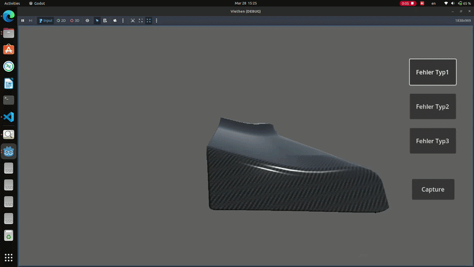
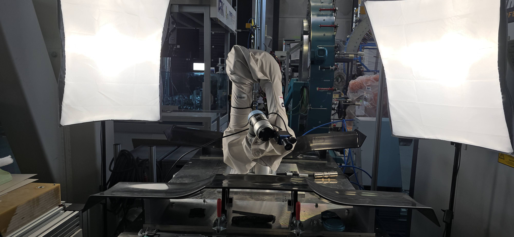
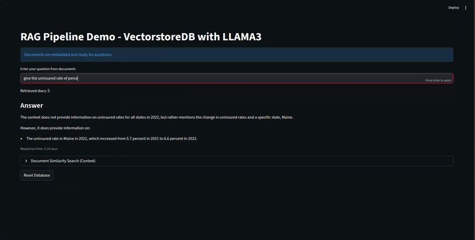
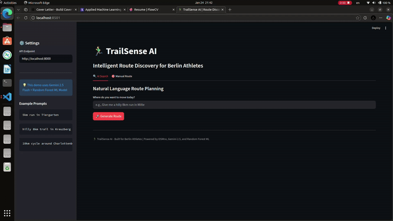

Selected Work
Production systems engineered for the next generation of automation.

3D Anomaly Annotation Tool
Built a high-fidelity simulation tool that generates auto-segmented 2D images of anomalies. It captures "before and after" states, completely eliminating the need for manual 2D labeling in vision pipelines.
Godot
Synthetic Data
CV


Context-Aware RAG Chatbot
Production-ready Retrieval-Augmented Generation pipeline with hybrid search and Vector DBs to eliminate hallucinations.
LANGCHAIN
VECTOR DB

Quadruped VNAV & SLAM
Implementation of Lidar-Visual SLAM stacks on legged platforms for autonomous indoor navigation.
SLAM
VNAV
Neura Robotics Challenge
SEMI-FINALIST
Integration of 4ne1 Humanoid into simulation. Developed deformable terrain walking algorithms.
HUMANOID
RL

TrailSense AI
Agentic routing engine for athletes. NLP intent parsing + Random Forest terrain scoring for 1M+ segments.
GEO-AI
SCALABLE